Forced Response Curves (FRC)
These curves are commonly studied to analyse the nonlinear oscillatory behaviour of mechanical systems subject to external excitation. The bending of these curves gives conclusive results about the system nonlinearities, their position reveals information about the spectrum and resonances inherent to the system. In experimental realisations they are used to analyse these very properties, for model identification and development it is thus desirable to have efficient routines which can extract them from computer based models.
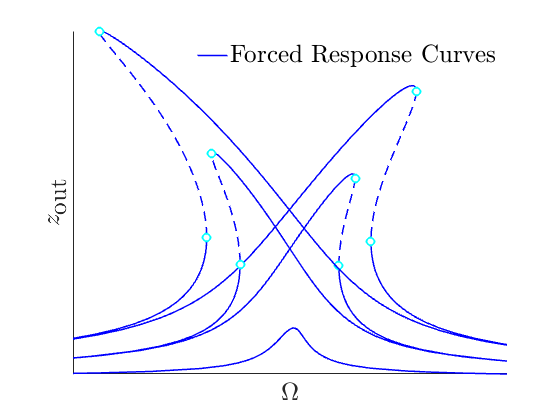
Contents
A motivation for model reduction
In the context of Finite Element Models (FEMs) which are analysed for these FRCs, the resulting dynamical systems are commonly very high dimensional 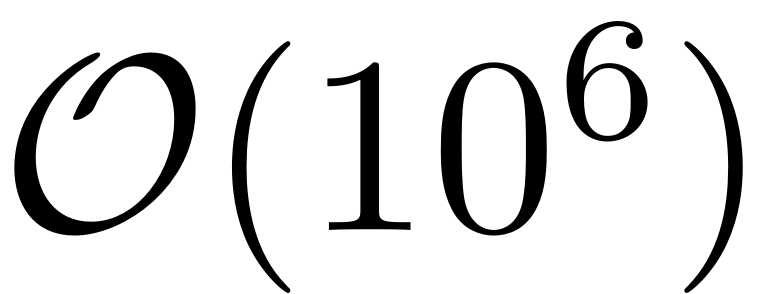 and lightly damped. Thus direct simulation is beyond reach and generally unfeasible. Reduced order models are then employed to obtain properties such as the FRCs of such systems. They aim to represent the full system dynamics accurately enough, albeit can be analysed at low computational cost due to their low dimensionality.
Especially in FEMs most modes are not relevant for the actual macroscopic behaviour of an object. Microscopic modes are a result of the discretisation and operate at very high frequencies, low amplitudes and decay at exponentially faster rates than the macroscopic modes. In practice these microscopic modes are also not forced directly, as they correspond to very high forcing frequencies, when compared to the typical environmental behaviour.
The persistent forced response of interest of the full dynamical system is thus typically the one associated to the slowest, macroscopic modes. In special cases, transient response or faster-oscillatory modes are of interested due to special types of excitation. This can be taken into consideration by extending the ROM to the respective range of modes.
Common methods to obtain ROMs are based on projection. The full system is projected onto a low dimensional basis which is chosen according to the system properties of interest. These may be based on the linear eigenmodes of the slow modes (Proper Orthogonal Decompositions for instance), projections in frequency space (Harmonic Balance) or onto more sophisticated basis which are numerically computed (eg. Dynamic Mode Decomposition). All of these bases, however, generally lack the key feature of forming invariant subspaces and thus cannot guarantee to accurately reproduce the full system response.
In SSMTool, using the mathematically rigorous theory on Spectral Submanifolds (SSM), we create exact ROMs on invariant manifolds for the computation of FRCs. They are exact in the sense, that, due to the invariance, the trajectories on the SSM correspond to trajectories of the full physical dynamical system. So any periodic orbit on the FRC, which is computed from the reduced dynamics, is mathematically guaranteed to exist in the full system. These models and manifolds can be computed automatically to arbitrary order of accuracy. Typically, however, the results already converge at low orders, making high order approximations unnecessary.
This procedure is furthermore efficient, it does not require modal transformations and computes the invariant manifolds directly from physical coordinates. Only the modes over which the SSM is constructed, along with some modes that are close in frequency space to check for the existence of the SSM need to be computed, which can also be done efficiently. Computing the ROM
In a forced response curve, the oscillation amplitudes of a system that is excited are reported as a function of the frequency of excitation. So if 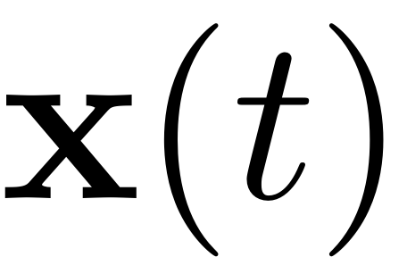 is a periodic orbit with frequency  in phase space, then for each orbit the point that fulfills
in phase space, then for each orbit the point that fulfills
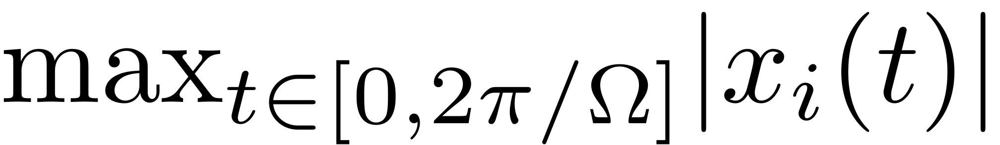
is displayed in the FRC. These curves give conclusive information about resonant and nonlinear behaviour of dynamical systems which is very valuable information in system analysis, design and control.
For large dynamical systems the computation of these periodic orbits, however is very costly and time consuming. Thus one commonly reverts to reduced order models to predict the forced response. The mathematically sound and rigorous way of doing so in the general case is via the use of invariant attracting manifolds. As these objects are invariant, any trajectory that starts in such a manifold, is restricted to it for its entirety. One can thus compute the trajectory using the local manifold coordinates only, and consequently map it back to the full space, without discarding any information of the initial full dynamical system. This guarantees that the trajectory which has been computed in the reduced space (on the manifold) is also a trajectory of the full dynamical system, including all qualitative and quantitative behaviour. SSMTool leverages on this fact and computes the periodic orbits on the invariant SSMs, which leads to a very fast and efficient routine. Consequently these orbits are mapped back to the full space via the SSM parametrisation to obtain the desired FRC.
To obtain a periodic orbit from the dynamics on the SSM the reduced dynamics
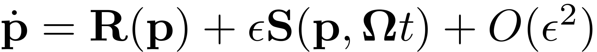
are analysed. They constitute an ODE in cartesian coordinates which can be analysed with the means of continuation and collocation. Examples of how this is implemented in SSMTool can be found in SSMTool. Alternatively they can be transformed to polar coordinates, which is of particular interest in the case of 2-D SSMs.
These points can be either found by continuation of equilibria in COCO or via a simple evaluation of the ODE over a grid of parametrisation coordinates. The zeros which result from this evaluation then constitute periodic orbits on the manifold, and therefore also for the full dynamical system ie.  . As this method merely requires the computation of level sets of zeros, the forced response can be computed independently for each forcing frequency 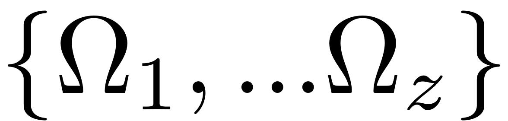 in the interval of interest. Another consequence is that isolated regions of forced response, so called isolas, can be computed at once. This is in stark contrast to continuation based methods, which will only find such branches of response when given appropriate initial conditions.
. As this method merely requires the computation of level sets of zeros, the forced response can be computed independently for each forcing frequency 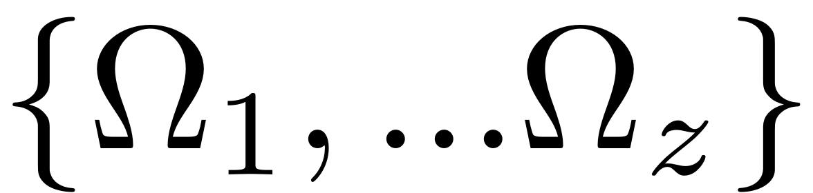 in the interval of interest. Another consequence is that isolated regions of forced response, so called isolas, can be computed at once. This is in stark contrast to continuation based methods, which will only find such branches of response when given appropriate initial conditions.
Extraction of the FRC: Level-Set method
This method can be used for directly computing the Forced Response for systems without internal resonance. As it allows for approximating the non-autonomous manifold and dynamics on it up to arbitrary orders these systems may include parametric excitation. We thus consider systems periodic external and parametric excitation and assume that the harmonic 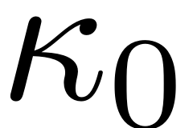 is in 1:1 resonance with the master mode, over which the SSM is constructed, i.e.
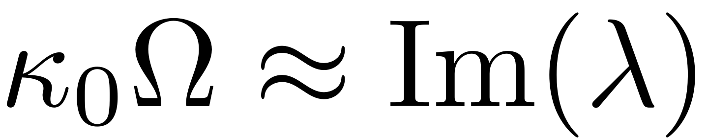
Furthermore assume that no internal resonances are present in the spectrum of the dynamical system. The periodic forced response and its stability can then be determined from the ROM by simple evaluation of zero level sets. We write the coordinates in polar form as
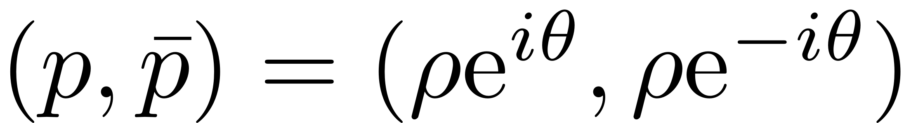
In order to find the periodic orbits of this system, we reformulate the dynamical equations in the polar coordinates (cf. Jain & Haller 2021, Thurnher, Jain & Haller, 2023).
Periodic orbits of the normal form reduced dynamics in these coordinates correspond to the joint set of parameters where
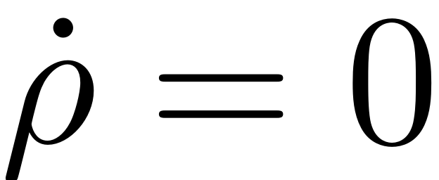

holds, with 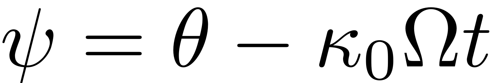 which denotes the phaseshift between the periodic response of the system and the external excitation. An illustration of the two level sets, and their union is displayed in the following along with a depiction of how the forced response is obtained from a the flow in parametrisation space (cf. Ponsioen, Pedergnanga & Haller 2019)
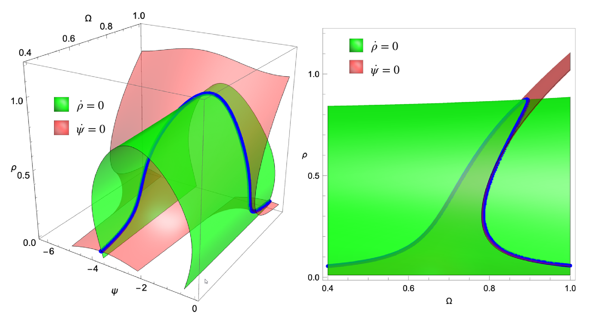

This procedure also allows to detect isolated regions of the forced response (cf. Ponsioen, Pedergnanga & Haller 2019). This procedure can be easily parallelised, as the level set of these two equations can be computed independently for each forcing frequency. The implementation of this routine thus works as depicted in the following scheme:
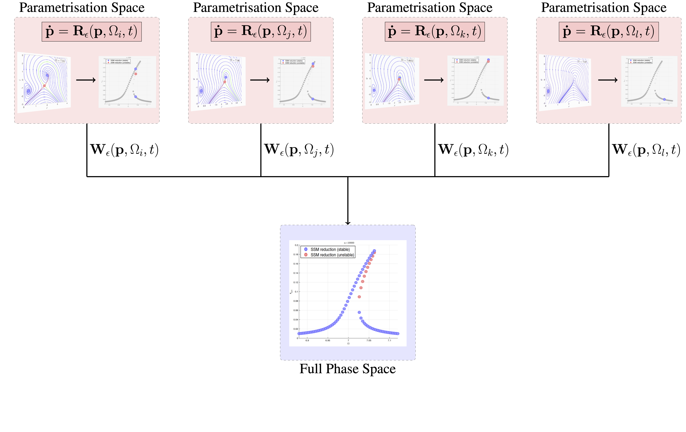
For each forcing frequency the reduced dynamics are evaluated over a grid of the coordinates 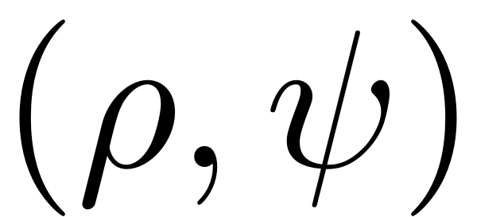. The steady states are then directly extracted and mapped to the full physical space via the SSM parametrisation  . In our toolbox, an automatised implementation of this workflow is implemented. Assume we have constructed an <SSM.html > object for a dynamical system and wish to compute the FRC corresponding to the specified forcing. The computation is set up via a number of parameters, a few of which are presented here.
. In our toolbox, an automatised implementation of this workflow is implemented. Assume we have constructed an <SSM.html > object for a dynamical system and wish to compute the FRC corresponding to the specified forcing. The computation is set up via a number of parameters, a few of which are presented here.
We can specify whether we want to compute a full or leading order approximation to the non-autonomous invariant manifold and reduced dynamics. If the former is chosen, then the non-autonomous manifold has to be computed for each sample forcing frequency. While this improves accuracy and is necessary for dynamical systems including parametric excitation and large amplitude excitation, a leading order approximation often is sufficient (cf. Haller & Jain 2021).
set(S.Options,'contribNonAuto',true)
As we wish to use the level set method, we have to set the corresponding parameter in the FRCOptions
set(S.FRCOptions, 'method',' level set' )
Finally, we specify the degrees of freedom, for which we would like the FRC to be plotted.
set(S.FRCOptions, 'outdof',outdof)
We can then set a frequency range omegaRange over which the FRC is constructed and either a single or multiple orders of approximation to the SSM and reduced dynamics expansion.
FRC = S.extract_FRC('freq',omegaRange,order);
Extraction of the FRC: Continuation of equilibria
This routine allows for the extraction of FRCs for leading-order non-autonomous approximations to SSMs, including systems with internal resonances Li, Jain & Haller, 2022. The reduced dynamics are written in polar coordinates, and equilibria of this polar representation are detected and continued. Consequently these are mapped back to physical coordinates at once, to produce the FRC for the full system. A schematic depiction of the procedure is shown in the following figure. The continuation algorithm operates locally. It looks for a nearby solution, after slightly changing the continuation parameter. An initial guess for this is obtained via the Jacobian of the ODE, both with respect to the continuation and system parameters. As it is local in nature, the detected response can only be followed along families of solutions - isolated regions of response cannot be detected.
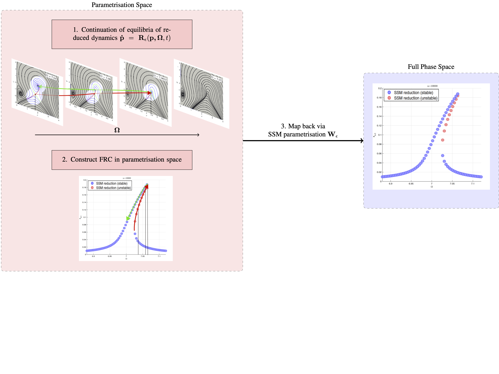
The method is used by setting the following parameters:
set(S.FRCOptions, 'method','continuation ep') % Choose routine
Continuation parameters which are important include the maximal and the initial step-size h_max and h0, the number of collocation intervalls nt , the number of continuation parameters nPar and the solver which is chosen for obtaining an initial solution.
set(S.contOptions,'h_max',h_max,'h0',h0); set(S.FRCOptions, 'nt', nt, 'nPar', nPar) set(S.FRCOptions,'initialSolver','fsolve');
The FRC may then be obtained by calling:
FRC = S.extract_FRC('freq',omegaRange,order);
Extraction of the FRC: Continuation of periodic orbits
Similarly to the routine for continuation of equilibria, the FRCs may aso be extracted via a continuation of periodic orbits of the reduced dynamics. This is done, using cartesian coordinates. The routine implemented here allows for the treatment of general dynamical systems including the case of purely parametric excitation, albeit only for 2D SSMs.
It is chosen by setting
set(S.FRCOptions, 'method','continuation po') % Choose routine